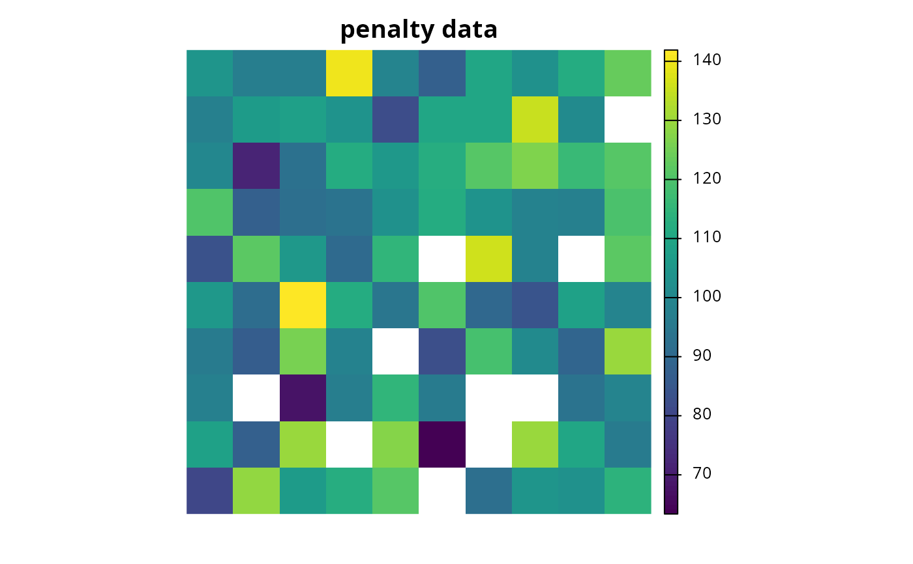
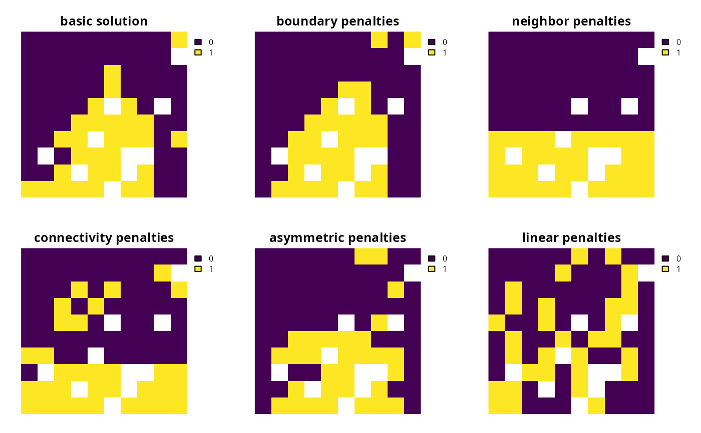

A penalty can be applied to a conservation planning problem() to
penalize solutions according to a specific metric. Penalties---unlike
constraints---act as an explicit trade-off with the objective
being minimized or maximized (e.g. solution cost when used with
add_min_set_objective()).
Both penalties and constraints can be used to modify a problem and identify solutions that exhibit specific characteristics. Constraints work by invalidating solutions that do not exhibit specific characteristics. On the other hand, penalties work by specifying trade-offs against the main problem objective and are mediated by a penalty factor.
The following penalties can be added to a conservation planning
problem():
add_boundary_penalties()Add penalties to a conservation problem to favor solutions that have planning units clumped together into contiguous areas.
add_connectivity_penalties()Add penalties to a conservation problem to favor solutions that select planning units with high connectivity between them.
add_linear_penalties()Add penalties to a conservation problem to favor solutions that avoid selecting planning units based on a certain variable (e.g. anthropogenic pressure).
# load data data(sim_pu_raster, sim_features) # create basic problem p1 <- problem(sim_pu_raster, sim_features) %>% add_min_set_objective() %>% add_relative_targets(0.2) %>% add_default_solver() # create problem with boundary penalties p2 <- p1 %>% add_boundary_penalties(5, 1) # create connectivity matrix based on spatial proximity scm <- as.data.frame(sim_pu_raster, xy = TRUE, na.rm = FALSE) scm <- 1 / (as.matrix(dist(scm)) + 1) # remove weak and moderate connections between planning units to reduce # run time scm[scm < 0.85] <- 0 # create problem with connectivity penalties p3 <- p1 %>% add_connectivity_penalties(25, data = scm) # create problem with linear penalties, # here the penalties will be based on random numbers to keep it simple # simulate penalty data sim_penalty_raster <- simulate_cost(sim_pu_raster) # plot penalty data plot(sim_penalty_raster, main = "penalty data", axes = FALSE, box = FALSE)# create problem with linear penalties, with a penalty scaling factor of 100 p4 <- p1 %>% add_linear_penalties(100, data = sim_penalty_raster) # \dontrun{ # solve problems s <- stack(solve(p1), solve(p2), solve(p3), solve(p4))#> Gurobi Optimizer version 9.0.2 build v9.0.2rc0 (linux64) #> Optimize a model with 5 rows, 90 columns and 450 nonzeros #> Model fingerprint: 0xac25e0fe #> Variable types: 0 continuous, 90 integer (90 binary) #> Coefficient statistics: #> Matrix range [2e-01, 9e-01] #> Objective range [2e+02, 2e+02] #> Bounds range [1e+00, 1e+00] #> RHS range [6e+00, 2e+01] #> Found heuristic solution: objective 4544.4850483 #> Presolve time: 0.00s #> Presolved: 5 rows, 90 columns, 450 nonzeros #> Variable types: 0 continuous, 90 integer (90 binary) #> Presolved: 5 rows, 90 columns, 450 nonzeros #> #> #> Root relaxation: objective 3.899056e+03, 12 iterations, 0.00 seconds #> #> Nodes | Current Node | Objective Bounds | Work #> Expl Unexpl | Obj Depth IntInf | Incumbent BestBd Gap | It/Node Time #> #> 0 0 3899.05601 0 4 4544.48505 3899.05601 14.2% - 0s #> H 0 0 3988.8131278 3899.05601 2.25% - 0s #> #> Explored 1 nodes (12 simplex iterations) in 0.00 seconds #> Thread count was 1 (of 4 available processors) #> #> Solution count 2: 3988.81 4544.49 #> #> Optimal solution found (tolerance 1.00e-01) #> Best objective 3.988813127763e+03, best bound 3.899056011987e+03, gap 2.2502% #> Gurobi Optimizer version 9.0.2 build v9.0.2rc0 (linux64) #> Optimize a model with 293 rows, 234 columns and 1026 nonzeros #> Model fingerprint: 0x0a271d91 #> Variable types: 0 continuous, 234 integer (234 binary) #> Coefficient statistics: #> Matrix range [2e-01, 1e+00] #> Objective range [1e+00, 2e+02] #> Bounds range [1e+00, 1e+00] #> RHS range [6e+00, 2e+01] #> Found heuristic solution: objective 18523.196992 #> Found heuristic solution: objective 4562.4850483 #> Presolve time: 0.00s #> Presolved: 293 rows, 234 columns, 1026 nonzeros #> Variable types: 0 continuous, 234 integer (234 binary) #> Presolved: 293 rows, 234 columns, 1026 nonzeros #> #> #> Root relaxation: objective 3.919306e+03, 95 iterations, 0.00 seconds #> #> Nodes | Current Node | Objective Bounds | Work #> Expl Unexpl | Obj Depth IntInf | Incumbent BestBd Gap | It/Node Time #> #> 0 0 3919.30612 0 11 4562.48505 3919.30612 14.1% - 0s #> H 0 0 4032.6556974 3919.30612 2.81% - 0s #> #> Explored 1 nodes (95 simplex iterations) in 0.01 seconds #> Thread count was 1 (of 4 available processors) #> #> Solution count 3: 4032.66 4562.49 18523.2 #> #> Optimal solution found (tolerance 1.00e-01) #> Best objective 4.032655697444e+03, best bound 3.919306123567e+03, gap 2.8108% #> Gurobi Optimizer version 9.0.2 build v9.0.2rc0 (linux64) #> Optimize a model with 25 rows, 100 columns and 490 nonzeros #> Model fingerprint: 0xa96ed2fb #> Variable types: 0 continuous, 100 integer (100 binary) #> Coefficient statistics: #> Matrix range [2e-01, 1e+00] #> Objective range [2e+01, 2e+02] #> Bounds range [1e+00, 1e+00] #> RHS range [6e+00, 2e+01] #> Found heuristic solution: objective 3646.6292724 #> Presolve time: 0.00s #> Presolved: 25 rows, 100 columns, 490 nonzeros #> Variable types: 0 continuous, 100 integer (100 binary) #> Presolved: 25 rows, 100 columns, 490 nonzeros #> #> #> Root relaxation: objective 3.295278e+03, 17 iterations, 0.00 seconds #> #> Nodes | Current Node | Objective Bounds | Work #> Expl Unexpl | Obj Depth IntInf | Incumbent BestBd Gap | It/Node Time #> #> 0 0 3295.27762 0 4 3646.62927 3295.27762 9.63% - 0s #> #> Explored 0 nodes (17 simplex iterations) in 0.00 seconds #> Thread count was 1 (of 4 available processors) #> #> Solution count 1: 3646.63 #> #> Optimal solution found (tolerance 1.00e-01) #> Best objective 3.646629272370e+03, best bound 3.295277619827e+03, gap 9.6350% #> Gurobi Optimizer version 9.0.2 build v9.0.2rc0 (linux64) #> Optimize a model with 5 rows, 90 columns and 450 nonzeros #> Model fingerprint: 0xfe6b9aff #> Variable types: 0 continuous, 90 integer (90 binary) #> Coefficient statistics: #> Matrix range [2e-01, 9e-01] #> Objective range [2e+04, 2e+04] #> Bounds range [1e+00, 1e+00] #> RHS range [6e+00, 2e+01] #> Found heuristic solution: objective 448327.49045 #> Presolve time: 0.00s #> Presolved: 5 rows, 90 columns, 450 nonzeros #> Variable types: 0 continuous, 90 integer (90 binary) #> Presolved: 5 rows, 90 columns, 450 nonzeros #> #> #> Root relaxation: objective 3.861099e+05, 15 iterations, 0.00 seconds #> #> Nodes | Current Node | Objective Bounds | Work #> Expl Unexpl | Obj Depth IntInf | Incumbent BestBd Gap | It/Node Time #> #> 0 0 386109.872 0 4 448327.490 386109.872 13.9% - 0s #> H 0 0 395536.44581 386109.872 2.38% - 0s #> #> Explored 1 nodes (15 simplex iterations) in 0.00 seconds #> Thread count was 1 (of 4 available processors) #> #> Solution count 2: 395536 448327 #> #> Optimal solution found (tolerance 1.00e-01) #> Best objective 3.955364458117e+05, best bound 3.861098723845e+05, gap 2.3832%# plot solutions plot(s, axes = FALSE, box = FALSE, main = c("basic solution", "boundary penalties", "connectivity penalties", "linear penalties"))# }